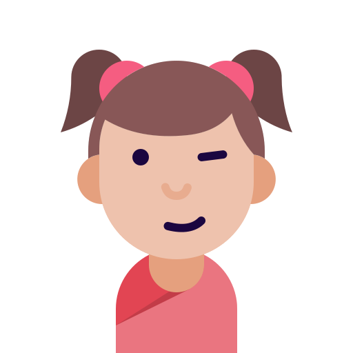
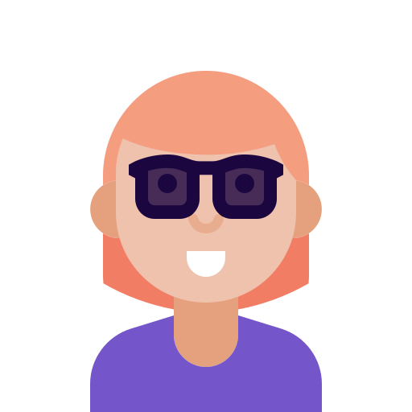
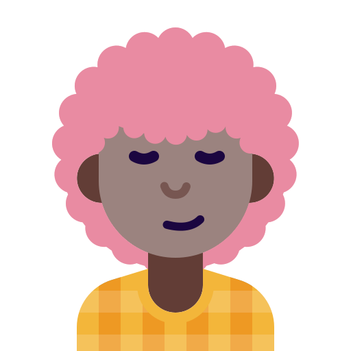
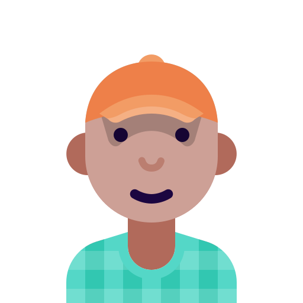
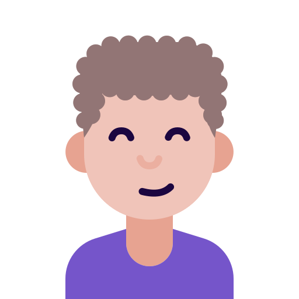

Valentina Ríos

Fundadora de Parche Dev y desarrolladora web
Aprendió a programar en un curso nocturno. Creó Parche Dev para que nadie tuviera que aprender solo.
Sesiones:
Seis personas de la comunidad que compartirán lo que saben

Fundadora de Parche Dev y desarrolladora web
Aprendió a programar en un curso nocturno. Creó Parche Dev para que nadie tuviera que aprender solo.
Sesiones:
Desarrollador frontend
Lleva ocho años haciendo sitios web y cree que un buen HTML resuelve la mitad de una
interfaz.
Sesiones:

Analista de datos
Convierte hojas de cálculo caóticas en bases de datos ordenadas. Para ella, SQL es un
superpoder.
Sesiones:

Especialista en accesibilidad web
Revisa sitios para que los usen personas con lector de pantalla, con teclado o
con baja visión.
Sesiones:

Desarrollador backend
Automatiza todo lo que se repite más de dos veces. En su taller harás un bot paso a paso.
Sesiones:

Desarrollador full stack
Publicó su primer sitio con HTML puro y hoy despliega en la nube. Su charla es en inglés.
Sesiones: